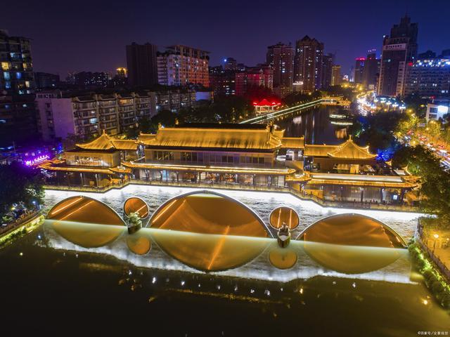
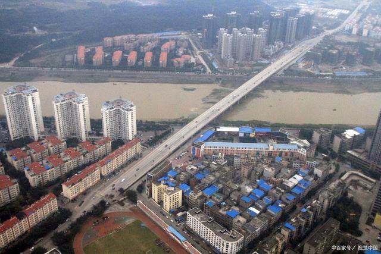

The so-called Land of Abundance has a pleasant climate and beautiful scenery, and this Land of Abundance has always been described as Sichuan. When it comes to Sichuan, the first thing most people think of is Chengdu. Even Chengdu has become synonymous with Sichuan. With the prosperity of tourism in recent years, Chengdu has had a considerable impact on Sichuan's economic development in terms of passenger flow.
Before I introduce the city, let's look at the data. As one of the core cities in Sichuan, Chengdu has the largest economic volume in Sichuan. Of course, this is mainly because Chengdu is large and rich in industries. Last year, Chengdu's GDP was 1,701.265 billion, an overall increase of 7.5%. It can be said that at a glance, there are few cities in Sichuan that can compare with Chengdu. However, Mianyang's growth rate has reached 8.1%. Friends who are familiar with economics should know that urban economic growth is difficult to maintain, especially for urban economies. With such potential, the whole country is a city with considerable potential.
Mianyang is located in the northwest of Sichuan. According to the division, it is a prefecture-level city and has a very good geographical location. Extending in all directions, you can use a lot of resources. In addition to this, with the development of the Science and Technology City, many talents have gradually poured into Mianyang, and this has become one of the reasons for the rise of Mianyang. Coupled with the fact that major enterprises are building scientific research bases here, Mianyang today has the reputation of Southwest Silicon Valley. However, due to the lack of tourist attractions, Mianyang is indeed not very famous.Due to the superior conditions of Mianyang itself, the Sichuan government is also very concerned about this, so various infrastructure constructions have followed. There are also airports, high-speed rail lines, and expressways built one by one in Mianyang. Coupled with the exchanges of human resources, a high development foundation has been laid here.In addition, Mianyang's medical facilities are also doing well, with domestic first-class medical department. And because most of the people come and go to seek development opportunities, it has also become a pretty good retirement city. The Mianyang government seized this opportunity and opened a number of colleges and universities, followed by the construction of various universities, and the education system was gradually improved.
Although the growth rate of Mianyang is fast, it cannot exceed the volume of Chengdu. After all, Chengdu has a rich industrial chain and a good geographical environment. Of course, the development of Mianyang is getting better and better. If you have the opportunity, you can experience the development yourself